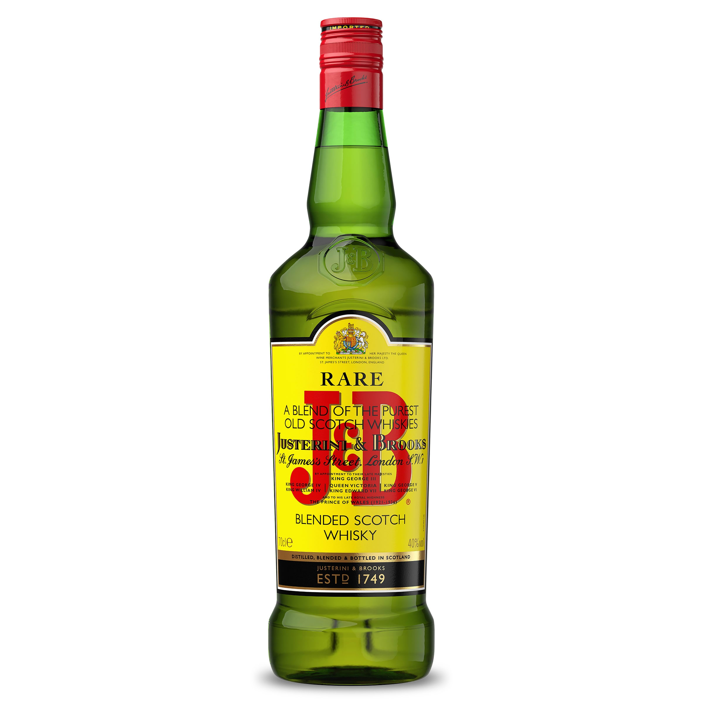

J&B
J&B (Justerini & Brooks) es un whisky escocés blended reconocido por su suavidad y equilibrio, con un perfil ligero y afrutado que incluye notas de vainilla, cítricos y un sutil toque de hierbas. Con una graduación alcohólica del 40%, es ideal para disfrutar solo, con hielo o en mezclas como whisky con cola o ginger ale. Su estilo accesible y versátil lo hace popular entre quienes buscan un whisky suave y fácil de beber, siendo una opción económica y perfecta para ocasiones informales o como base para cócteles.
Comentarios
- Comentario 1: Muy interesante.
- Comentario 2: Gran artículo, gracias por compartir.
- Comentario 3: Tengo algunas preguntas.